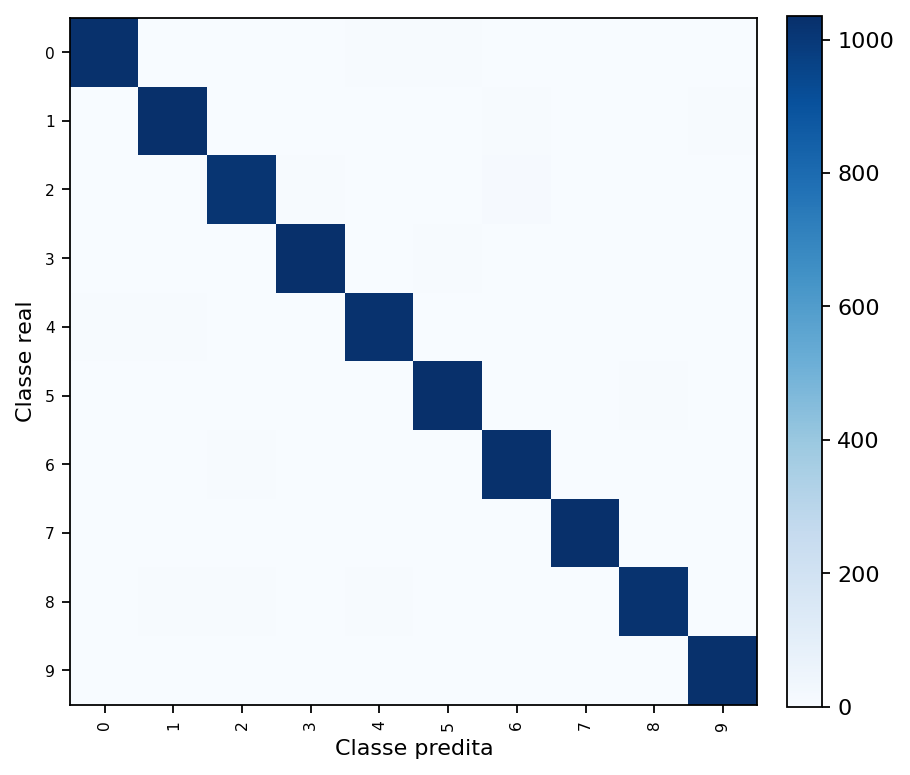
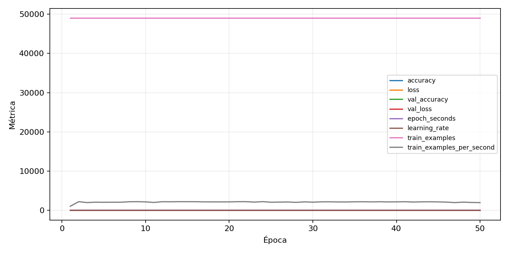

| n_samples | 10500 |
|---|---|
| loss | 0.0821884274482727 |
| accuracy | 0.9800952380952381 |
| balanced_accuracy | 0.9800952380952381 |
| macro_f1 | 0.9800971121840556 |


| Índice | Classe | Suporte | Precisão | Recall | F1 |
|---|---|---|---|---|---|
| 0 | 0 | 1050 | 0.9903660886319846 | 0.979047619047619 | 0.9846743295019158 |
| 1 | 1 | 1050 | 0.9745042492917847 | 0.9828571428571429 | 0.9786628733997155 |
| 2 | 2 | 1050 | 0.9797101449275363 | 0.9657142857142857 | 0.9726618705035971 |
| 3 | 3 | 1050 | 0.9810606060606061 | 0.9866666666666667 | 0.9838556505223173 |
| 4 | 4 | 1050 | 0.9761904761904762 | 0.9761904761904762 | 0.9761904761904762 |
| 5 | 5 | 1050 | 0.9727699530516432 | 0.9866666666666667 | 0.9796690307328606 |
| 6 | 6 | 1050 | 0.9689849624060151 | 0.981904761904762 | 0.9754020813623463 |
| 7 | 7 | 1050 | 0.9838403041825095 | 0.9857142857142858 | 0.9847764034253093 |
| 8 | 8 | 1050 | 0.9836538461538461 | 0.9742857142857143 | 0.9789473684210527 |
| 9 | 9 | 1050 | 0.9903938520653218 | 0.981904761904762 | 0.9861310377809661 |
{"adapter":"kmnist","balance_mode":"all_raw","class_names":["0","1","2","3","4","5","6","7","8","9"],"dataset":"kmnist","dataset_options":{},"dataset_root":"/home/msduda/datasets-tcc/kmnist","native_channels":1,"normalization":"unit_interval","num_classes":10,"protocol":{"checkpoint_monitor":"val_macro_f1","dtype_policy":"float32","early_stopping":{"patience":50,"restore_best_weights":true},"evaluation_augmentation":false,"input_channels":"native","op_determinism":false,"optimizer":"Adam","pretrained_weights":false,"qat_weight_bits":4,"reduce_lr_on_plateau":{"factor":0.3,"min_lr":1e-07,"patience":50},"resize":"proportional_padding","test_time_augmentation":false,"training_from_scratch":true},"seed":42,"source_fingerprint":"8928d478d8d23938a73b4f4a92c407bf3d74beff1e0e67e3644d6ecdc30cf828","source_manifest":{"class_names":["0","1","2","3","4","5","6","7","8","9"],"joined_samples":70000,"metadata":{"layout":"kmnist-component-npz"},"name":"kmnist","native_channels":1,"source_path":"/home/msduda/datasets-tcc/kmnist","splits":{"test":10000,"train":60000},"target_size":64},"target_size":64,"test_fraction":0.15,"train_fraction":0.7,"training":{"augmentation":{"brightness_delta":0.0,"contrast_lower":1.0,"contrast_upper":1.0,"cutout_max_frac":0.0,"cutout_prob":0.0,"flip_lr":false,"noise_std":0.0,"translate_frac":0.0,"zoom_max":1.0,"zoom_min":1.0},"batch_size":256,"default_image_size":64,"dtype_policy":"float32","early_stopping_patience":50,"extra_fraction":0.0,"image_size_overrides":{"gtsrb":128},"keras_verbose":1,"learning_rate":0.0003,"max_epochs":50,"preprocess_cache_max_mib":0,"qat_weight_bits":4,"reduce_lr_factor":0.3,"reduce_lr_min_lr":1e-07,"reduce_lr_patience":50,"shuffle_buffer_max_mib":0},"validation_fraction":0.15}
{"epochs_completed":50,"epochs_recorded":50,"evaluation_seconds":10.73470462700061,"fit_seconds_current_attempt":1792.4901157969998,"max_epoch_seconds":46.512165076999736,"max_epochs":50,"mean_epoch_seconds":23.39606706079998,"mean_train_examples_per_second":2118.0351302010185,"median_train_examples_per_second":2161.9313768058028,"min_epoch_seconds":22.01757007699962,"selected_checkpoint":"/mnt/e/tcc-benchmark/outputs/kmnist-quantization-2026-08-09/int4_qat/kmnist/runs/kmnist__unit_interval__all_raw__seed-42/checkpoints/best.keras","tensorflow_gpu_memory_after":{"GPU:0":{"current":5947392,"peak":702903040}},"total_seconds":1169.803353039999,"training_seconds":1169.803353039999,"wall_seconds_current_attempt":1806.9905080820008}
{"elapsed_seconds":1806.9116789340005,"event_counts":{"data_preparation_end":1,"data_preparation_start":1,"epoch_end":50,"evaluation_end":1,"evaluation_start":1,"fit_end":1,"fit_start":1,"periodic":354,"run_completed":1,"train_start":1},"generated_at":"2026-08-09T23:22:40.713+00:00","gpu_backend":"pynvml","interval_seconds":5.0,"metrics":{"cpu_percent":{"count":412,"max":48.7,"mean":26.68373786407767,"min":0.0,"p50":28.0,"p95":46.4},"disk_data_free_bytes":{"count":412,"max":998271467520.0,"mean":998271406338.4855,"min":998271397888.0,"p50":998271406080.0,"p95":998271406080.0},"disk_data_percent":{"count":412,"max":2.7,"mean":2.7,"min":2.7,"p50":2.7,"p95":2.7},"disk_data_total_bytes":{"count":412,"max":1081101176832.0,"mean":1081101176832.0,"min":1081101176832.0,"p50":1081101176832.0,"p95":1081101176832.0},"disk_data_used_bytes":{"count":412,"max":27837423616.0,"mean":27837415165.514565,"min":27837353984.0,"p50":27837415424.0,"p95":27837415424.0},"disk_output_free_bytes":{"count":412,"max":207145816064.0,"mean":207137980366.29126,"min":207136935936.0,"p50":207137701888.0,"p95":207137857536.0},"disk_output_percent":{"count":412,"max":79.3,"mean":79.3,"min":79.3,"p50":79.3,"p95":79.3},"disk_output_total_bytes":{"count":412,"max":1000186310656.0,"mean":1000186310656.0,"min":1000186310656.0,"p50":1000186310656.0,"p95":1000186310656.0},"disk_output_used_bytes":{"count":412,"max":793049374720.0,"mean":793048330289.7087,"min":793040494592.0,"p50":793048608768.0,"p95":793048772608.0},"elapsed_seconds":{"count":412,"max":1806.868149,"mean":908.6892526553398,"min":0.028651,"p50":909.400997,"p95":1731.2536965},"gpu_count":{"count":412,"max":1.0,"mean":1.0,"min":1.0,"p50":1.0,"p95":1.0},"gpu_memory_percent":{"count":412,"max":58.771514892578125,"mean":55.63704342518038,"min":42.910051345825195,"p50":55.66105842590332,"p95":57.90443420410156},"gpu_memory_total_bytes":{"count":412,"max":8589934592.0,"mean":8589934592.0,"min":8589934592.0,"p50":8589934592.0,"p95":8589934592.0},"gpu_memory_used_bytes":{"count":412,"max":5048434688.0,"mean":4779185639.145631,"min":3685945344.0,"p50":4781248512.0,"p95":4973953024.0},"gpu_temperature_c":{"count":412,"max":60.0,"mean":53.657766990291265,"min":41.0,"p50":53.0,"p95":59.0},"gpu_utilization_percent":{"count":412,"max":100.0,"mean":46.12864077669903,"min":6.0,"p50":39.0,"p95":76.0},"process_cpu_percent":{"count":412,"max":632.2,"mean":328.4839805825243,"min":0.0,"p50":375.04999999999995,"p95":601.795},"process_read_bytes":{"count":412,"max":0.0,"mean":0.0,"min":0.0,"p50":0.0,"p95":0.0},"process_rss_bytes":{"count":412,"max":3451113472.0,"mean":3264721313.553398,"min":1127247872.0,"p50":3295860736.0,"p95":3424867328.0},"process_vms_bytes":{"count":412,"max":48402567168.0,"mean":48175671793.08738,"min":41773912064.0,"p50":48301260800.0,"p95":48402567168.0},"process_write_bytes":{"count":412,"max":1130496.0,"mean":1116488.077669903,"min":4096.0,"p50":1130496.0,"p95":1130496.0},"ram_available_bytes":{"count":412,"max":14347210752.0,"mean":12374037106.330097,"min":12189216768.0,"p50":12348489728.0,"p95":12707477913.6},"ram_percent":{"count":412,"max":26.7,"mean":25.54684466019417,"min":13.7,"p50":25.7,"p95":26.5},"ram_total_bytes":{"count":412,"max":16619089920.0,"mean":16619089920.0,"min":16619089920.0,"p50":16619089920.0,"p95":16619089920.0},"ram_used_bytes":{"count":412,"max":4429873152.0,"mean":4245052813.669903,"min":2271879168.0,"p50":4270600192.0,"p95":4405669478.4}},"sample_count":412,"schema_version":1}